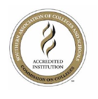

Accreditation & Recognition

Paul D. Camp Community College is accredited by the Southern Association of Colleges and Schools Commission on Colleges (SACSCOC) to award associate degrees. Paul D. Camp Community College also may offer credentials such as certificates and diplomas at approved degree levels. Questions about the accreditation of Paul D. Camp Community College may be directed in writing to the Southern Association of Colleges and Schools Commission on Colleges at 1866 Southern Lane, Decatur, GA 30033-4097, by calling (404) 679-4500, or by using information available on SACSCOC's website (www.sacscoc.org).
Paul D. Camp Community College, a member of the Virginia Community College System, is approved by the State Board for Community Colleges. The associate degree curricula of the college have been approved by the State Council of Higher Education for Virginia. Most college programs have been approved by the Virginia State Approving Agency for Veteran's Administration Assistance and by the U.S. Office of Education for various federally funded programs.
In addition, certain programs of the college are approved by the appropriate state agency. Camp's Nursing associate degree program (2023) and the Practical Nursing certificate program (2022) are fully approved by the Virginia Board of Nursing. The Nurse Aide career studies certificate program (2026) is approved by the Virginia Board of Nursing. Camp's EMS Program is approved by the Virginia Department of Health Office of Emergency Medical Services upon the recommendation of Division of Educational Development (2017). The EMS AEMT and Paramedic programs have received a letter of review by the Committee on Accreditation for EMS Professionals (2025). Camp's Nursing associate degree program is accredited from the Accreditation Commission for Education in Nursing (2022).